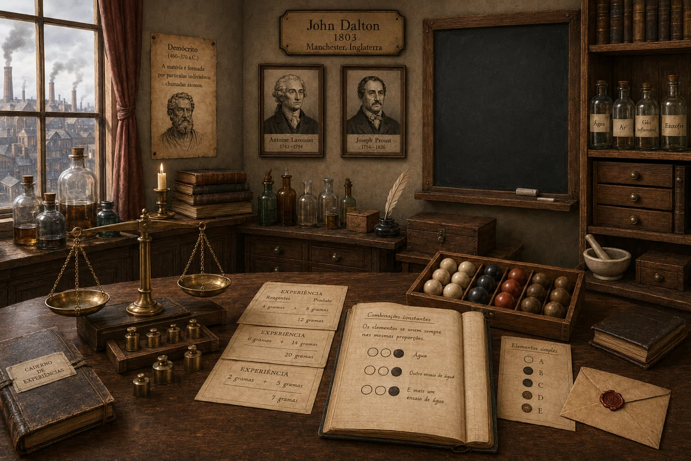

John Dalton's Cabinet

Professor Rafaela
Observe the objects and choose the ones that help reconstruct Dalton's theory.
Dalton's Theory Complete
You gathered the evidence that helped Dalton argue that matter is made up of atoms: solid particles, indivisible according to that model, that combine in fixed proportions.
